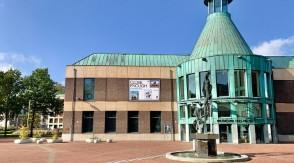
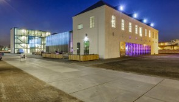
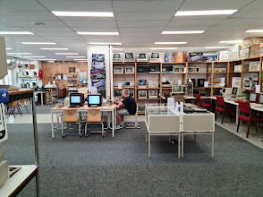
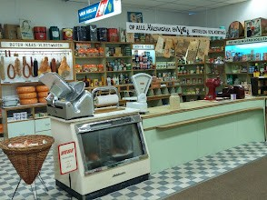
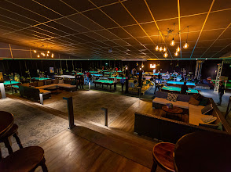
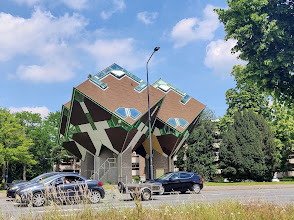
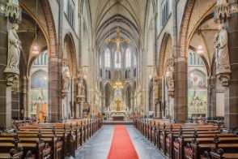
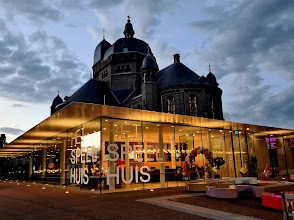
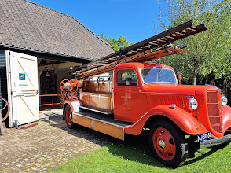

Kunsthal. In deze moderne kunsthal presenteert het museum tijdelijke fotografie- en kunsttentoonstellingen voor liefhebbers van kunst en cultuur en schoolgroepen. Kunsthal Helmond is gevestigd in het Boscotondocomplex in het centrum van de stad.
Cacaofabriek. Culturele hotspot in Helmond. Laat je inspireren in De Cacaofabriek. Over onze locatie Binnenkort te zien. Culturele hotspot in Helmond.
Home Computer Museum. HomeComputerMuseum is een initiatief om om de kennis en de machines te preserveren en op een interactieve manier te presenteren.
Edah Museum. ‘Vruuger’ deden Helmonders hun dagelijkse boodschappen bij grootgrutters als EDAH en talloze kleine winkeltjes en speciaalzaken. Dat was sinds het begin van de vorige eeuw overal in Nederland niet anders. Aan de hand van de historie van het oer-Helmondse kruideniersbedrijf EDAH ga je in het museum terug naar het boodschappen doen in de vorige eeuw.
Snookertown. Vanaf 10 personen bieden wij all-in arrangementen met een avondvullend programma. Een activiteit in combinatie met heerlijk bourgondisch eten en drankjes.
Kubuswoningen. De kubuswoningen in Helmond zijn een proefproject met 3 woningen, en een groter project met 18 kubusvormige paalwoningen.
Lambertuskerk. De Sint-Lambertuskerk in Helmond is een kerk in neogotische stijl, gebouwd in de periode 1856-1861 ter vervanging van de middeleeuwse kerk op dezelfde plaats.
Het Speelhuis. Het Speelhuis is een iconisch theater midden in het centrum van Helmond. We hebben uitgebreid programma met voor ieder wat wils.
Jan Visser Museum. Het Jan Visser Museum is oorspronkelijk gericht op het landbouwverleden tot voor de mechanisatie.
